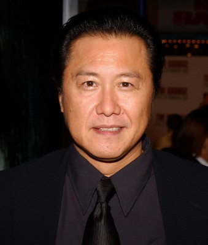
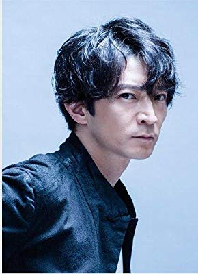
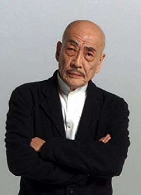

#11651 Suicide Circle

 IMDB-Wertung: 6.6 / 10
IMDB-Wertung: 6.6 / 10  Metascore: 0
Metascore: 0 
Tokio, Shinjuku U-Bahn-Station: 54 junge Mädchen begehen kollektiven Selbstmord, indem sie sich vor die Bahn werfen. Die Polizei muss hilflos mit ansehen, wie infolge dessen eine wahre Welle von Selbstmorden junger Menschen das ganze Land schockiert. Inspektor Kuroda stößt bei seinen Ermittlungen auf eine mysteriöse Website, die die Wurzel allen Übels zu sein scheint. Als dann ein sadistischer Psychopath festgenommen wird, der sich selbst als Anführer des "Suicide Clubs" bezeichnet, scheint der Fall gelöst. Doch die Selbstmorde gehen weiter ...
Jahr: 2001
Dauer: 99 Minuten
FSK: 18
Land: Japan Studio: I-On New MediaTonspuren:
Untertitel:
Auflösung: SD (576x320) Größe: 696 MB
Genre: Thriller, Horror, Drama, Krimi, Mystery
Regisseur: Sion Sono
Drehbuch: Sion Sono
Soundtrack: Tomoki Hasegawa
Darsteller:
-  Ryo Ishibashi als Detective Toshiharu Kuroda
 Masatoshi Nagase als Detective Shibusawa
Masatoshi Nagase als Detective Shibusawa-  Kenjirô Tsuda als Mita
- Kimiko Yo als Kiyomi Kuroda
-  Akaji Maro als Detective Murata
- Mai Hosho als Nurse Atsuko Sawada
- Tamao Satô als Nurse Yôko Kawaguchi
- Takashi Nomura als Security Guard Jirô
- Rolly als Muneo 'Genesis' Suzuki
- Joshua als Slave Boy
- Masato Tsujioka als Genesis' Gang
- Kôsuke Hamamoto als Genesis' Gang
- Kei Nagase als Genesis' Gang
- Yôko Kamon als 'The Bat' Kiyoko
- Maiko Mori als Kiyoko's Sister
- Sayako Hagiwara als Mitsuko
- Takatoshi Kaneko als H.S. Boy on the Roof
- Mika Miyakawa als H.S. Girl on the Roof
- Kei Tanaka als H.S. Boy on the Roof
- Chika Hayashi als
- Nobuyuki Mihara als H.S. Boy on the Roof
- Nahana als H.S. Girl on the Roof
- Yôhei Katô als
- Sadaharu Kondô als
- Suzunosuke als
- Satomi Hisanaga als H.S. Girl on the Roof
- Seiko Hashimoto als H.S. Girl on the Roof
- Anri Maruyama als
- Mai Kanda als
- Noriyoshi Shioya als Masa - Mitsuko's Boyfriend
- Kasumi Takahashi als Masa's Mother
- Hajime Matsumoto als Tôru Kuroda
- Mika Kikuchi als Sakura Kuroda
- Keiko Suzuki als
- Yukijirô Hotaru als
- Miwa Ôtsuka als
- Makoto Utsugi als
- Ken Ishikawa als
- Rika Nakanishi als
- Kaede Tamiya als
- Atsushi Okuno als
- Takuji Suzuki als
- Madoka Arai als Genesis' Victim
- Taihei Hayashiya als Rakugo Storyteller
- Atsushi Numata als Stand-up Comedy Duo
- Katsuhiko Watanabe als Stand-up Comedy Duo
- Takamitsu Ôkubo als Father
- Yuhei Okabe als Son
- Nono Yamada als Daughter
- Tateo Moriyasu als Kiyoko's Father
Datei: X:\FSK18-Eastern\Suicide Circle (2001, FSK18, 576x320).avi seit 13.08.2019
Festplatte: FSK18
 Es gibt insgesamt 102 Filme in der Gruppe 'FSK18-Eastern'
Es gibt insgesamt 102 Filme in der Gruppe 'FSK18-Eastern'